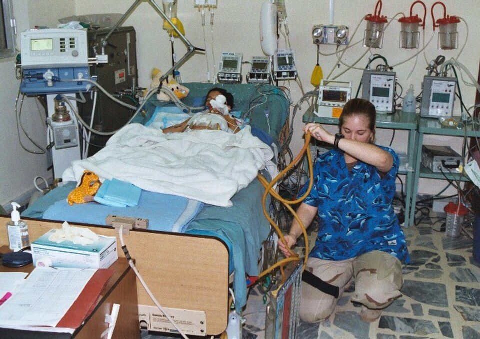

Aislamientos y precauciones
Las precauciones estándar se aplican a todos los pacientes, siempre. Las precauciones por contacto, gotas o transmisión aérea se añaden cuando se sospecha o se confirma una infección que se contagia por esa vía.
Revisado en noviembre de 2026 · Fuentes al final de la página


Precauciones estándar: con todos los pacientes
- Higiene de manos en los cinco momentos de la OMS (ver higiene de manos).
- Equipo de protección según la exposición prevista: guantes si hay contacto con sangre, fluidos, mucosas o piel no intacta; bata, mascarilla y protección ocular si puede haber salpicaduras.
- Higiene respiratoria: taparse al toser, mascarilla al paciente con síntomas respiratorios y separación de otros pacientes.
- Inyección segura: una aguja y una jeringa para cada paciente, viales monodosis cuando sea posible, nunca reencapuchar y desechar en el contenedor.
- Limpieza del entorno, manejo seguro de la ropa y de los residuos, y material de uso compartido limpio entre pacientes.
Precauciones según la vía de transmisión
| Tipo | Ejemplos | Medidas principales |
|---|---|---|
| Contacto | Bacterias multirresistentes (SARM, enterobacterias productoras de BLEE o carbapenemasas), Clostridioides difficile, sarna, gastroenteritis por rotavirus o norovirus | Habitación individual o agrupar casos. Bata y guantes al entrar. Material exclusivo (fonendo, manguito, termómetro). |
| Gotas | Gripe, tosferina, meningitis meningocócica en las primeras 24 h de tratamiento, parotiditis | Habitación individual o separación de más de 1 metro. Mascarilla quirúrgica para el profesional cerca del paciente y para el paciente en los traslados. |
| Transmisión aérea | Tuberculosis pulmonar o laríngea, sarampión, varicela | Habitación individual con presión negativa si existe, puerta cerrada. Mascarilla FFP2 o FFP3 ajustada para el profesional; quirúrgica para el paciente en los traslados. |
Algunas infecciones necesitan precauciones combinadas: por ejemplo, la COVID-19 o el virus respiratorio sincitial (contacto y gotas, con protección respiratoria en los procedimientos que generan aerosoles), o la varicela (aérea y contacto).
Clostridioides difficile: la solución alcohólica no elimina sus esporas. Tras atender al paciente, lavado de manos con agua y jabón, y limpieza del entorno con productos clorados.
El paciente y la familia
- Explica por qué se aísla, cuánto durará y qué deben hacer las visitas (higiene de manos, bata o mascarilla).
- El aislamiento puede causar soledad, ansiedad y menos atención: no debe suponer menos visitas del personal ni menos cuidados.
- Avisa al servicio receptor antes de un traslado o una prueba.
Fuentes
- Siegel JD, Rhinehart E, Jackson M, Chiarello L y Healthcare Infection Control Practices Advisory Committee. 2007 Guideline for Isolation Precautions: Preventing Transmission of Infectious Agents in Healthcare Settings. CDC; actualizada en 2023. www.cdc.gov
- Organización Mundial de la Salud. WHO Guidelines on Hand Hygiene in Health Care. Ginebra: OMS; 2009, y material de la campaña «Sus 5 momentos para la higiene de las manos». www.who.int
- Organización Mundial de la Salud. Infection prevention and control in the context of COVID-19: a guideline, y recomendaciones generales de precauciones estándar. www.who.int